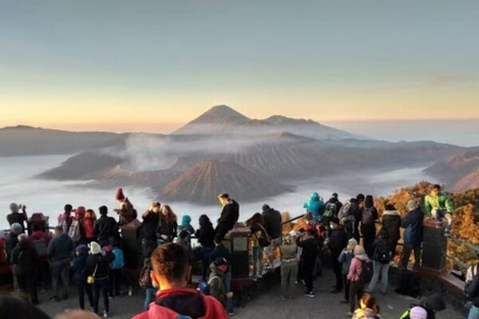
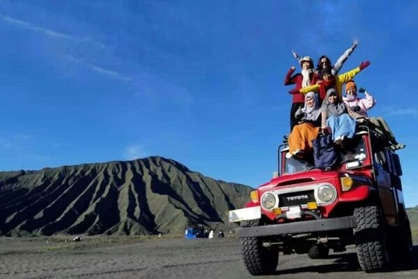
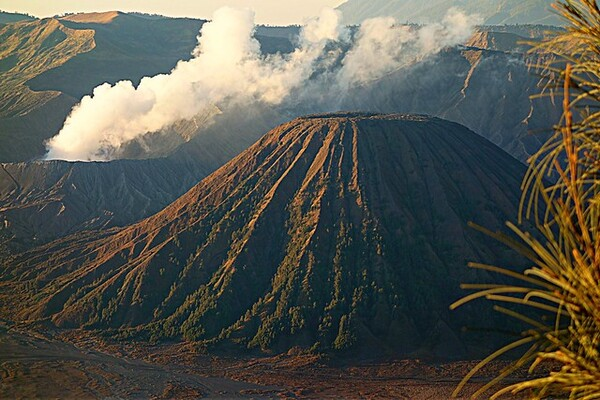
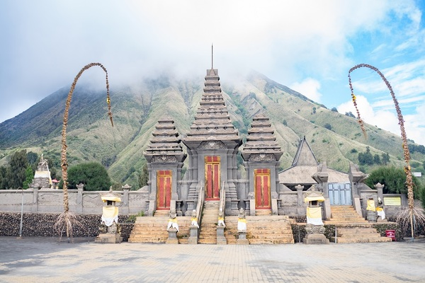
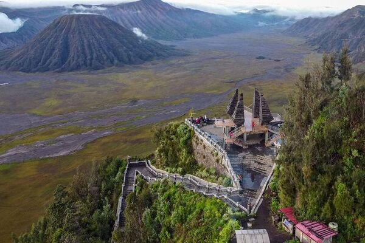
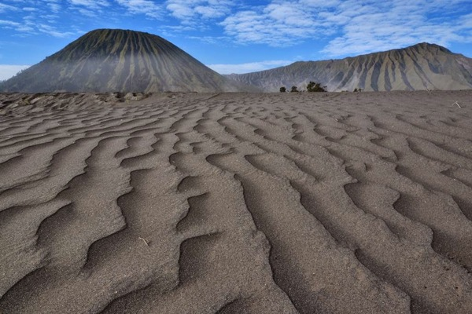

Gunung Bromo
Gunung Bromo atau dalam bahasa Tengger dieja "Brama", juga disebut Kaldera Tengger, adalah sebuah gunung berapi aktif di Jawa Timur, Indonesia. Gunung ini memiliki ketinggian 2.329 meter di atas permukaan laut dan berada dalam empat wilayah kabupaten, yakni Kabupaten Probolinggo, Kabupaten Pasuruan, Kabupaten Lumajang, dan Kabupaten Malang. Gunung Bromo terkenal sebagai objek wisata utama di Jawa Timur. Sebagai sebuah objek wisata, Bromo menjadi menarik karena statusnya sebagai gunung berapi yang masih aktif. Gunung Bromo termasuk dalam kawasan Taman Nasional Bromo Tengger Semeru.
Nama Bromo berasal dari nama dewa utama dalam agama Hindu, Brahma. Bentuk tubuh Gunung Bromo bertautan antara lembah dan ngarai dengan kaldera atau lautan pasir seluas sekitar 10 kilometer persegi, Ia mempunyai sebuah kawah dengan garis tengah ± 800 meter (utara-selatan) dan ± 600 meter (timur-barat). Sedangkan daerah bahayanya berupa lingkaran dengan jari-jari 4 km dari pusat kawah Bromo.
Sejarah letusan
Selama abad 20 dan abad 21, Gunung Bromo telah meletus sebanyak beberapa kali, dengan interval waktu yang teratur, yaitu 30 tahun. Letusan terbesar terjadi 1974, sedangkan letusan terakhir terjadi pada 19 Juli 2019.
Bromo sebagai gunung suci
Bagi penduduk sekitar Gunung Bromo, suku Tengger, Gunung Bromo/Gunung Brahma dipercaya sebagai gunung suci. Setiap setahun sekali masyarakat Tengger mengadakan upacara Yadnya Kasada atau Kasodo. Upacara ini bertempat di sebuah pura yang berada di bawah kaki Gunung Bromo dan dilanjutkan ke puncak Bromo. Upacara diadakan pada tengah malam hingga dini hari setiap bulan purnama sekitar tanggal 14 atau 15 pada bulan Kasodo (kesepuluh) menurut penanggalan Jawa.
Tempat wisata di Bromo
Gunung Penanjakan
Gunung Penanjakan atau bisa juga disebut Pananjakan adalah salah satu gunung yang terdapat di Taman Nasional Bromo Tengger Semeru, Pasuruan, Jawa Timur, Indonesia. Gunung Penanjakan lebih diidentikan dengan sebutan Penanjakan 1 yang biasa dijadikan sebagai lokasi pandang untuk melihat Gunung Bromo, karena ketinggiannya di atas Gunung Bromo yang hanya memiliki ketinggian 2329 mdpl.[1] Dari Gunung Penanjakan dapat terlihat lautan pasir luas beserta Gunung Bromo di tengahnya, lalu juga terlihat Gunung Batok, Gunung Kursi dan Gunung Semeru.
Lembah Widodaren
Gunung Widodaren adalah sebuah gunung yang terletak di Jawa Timur, dekat dengan Gunung Bromo dan Semeru. Gunung Widodaren memiliki ketinggian 2.614 meter di atas permukaan laut. Gunung ini merupakan salah satu bagian dari kaldera Tengger. Gunung Widodaren termasuk dalam kawasan Taman Nasional Bromo Tengger Semeru.
Gunung Batok
Gunung Batok adalah sebuah gunung yang terletak di Jawa Timur, Indonesia. Gunung ini memiliki ketinggian 2.440 meter di atas permukaan laut dan berada di Kecamatan Tosari - Kabupaten Pasuruan, yang merupakan batas tenggara Pasuruan. Letak Gunung Batok berdekatan dengan Gunung Bromo dan Gunung Semeru. Gunung ini merupakan salah satu gunung mati atau tidak aktif yang terletak di kawasan pegunungan Tengger. Gunung Batok termasuk dalam kawasan Taman Nasional Bromo Tengger Semeru.
Pura Luhur Poten
Pura Luhur Poten atau disebut juga Sanggar Agung Poten adalah sebuah pura yang terletak di bawah Gunung Bromo. Pura ini adalah tempat persembahyangan umat Hindu Tengger. Pura ini dianggap sebagai satu-satunya bangunan yang dibangun di atas padang pasir. Pendiriannya ditujukan untuk tempat masyarakat Hindu Tengger menyembah dewa Brahma.
Seruni Point
Ada banyak spot panorama di kawasan Gunung Bromo. Salah satunya adalah Seruni Point. Spot panorama ini tidak berada dalam kawasan Taman Nasional Bromo Tengger Semeru (TNBTS), sehingga wisatawan tidak perlu booking online. Salah satu keunikan Seruni Point adalah, adanya bangunan berupa pura dengan panorama terbuka ke arah selatan.
Pasir Berbisik
Nama pasir berbisik bukan tanpa sebab, ada asal usul tersendiri yang membuat kawasan Bromo memiliki ciri khas tertentu. Pasir berbisik adalah sebutan untuk lautan pasir di kaldera Bromo. Padang pasir ini merupakan ciri khas yang utama dengan latar belakang pegunungan Bromo dan alam sekitarnya.